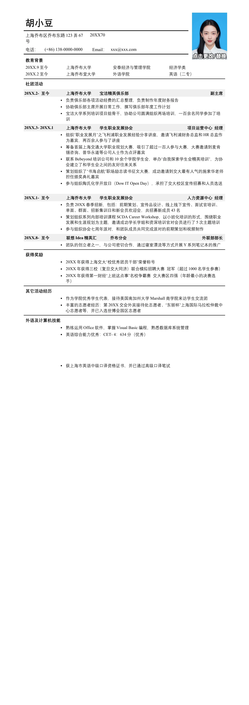

胡小豆
上海乔布区乔布东路
123
弄
67
号
20XX70
电话：
(+86) 138-0000-0000
Email
：
xxx@xxx.com
教育背景
20XX.9
至今
上海乔布大学
安泰经济与管理学院
经济学类
20XX.2
至今
上海乔布堂大学
外语学院
英语（二专）
社团活动
20XX.2-
至今
上海乔布大学
宝洁精英俱乐部
副主席
•
负责俱乐部各项活动经费的汇总整理，负责制作年度财务报告
•
协助俱乐部主席开展日常工作，撰写俱乐部年度工作计划
•
宝洁大学系列培训项目组骨干，协助公司圆满组织两场培训，一百余名同学参加了培
训
20XX.3- 20XX.1
上海乔布大学
学生职业发展协会
项目运营中心 经理
•
组织“职业发展月”之飞利浦职业发展经验分享讲座，邀请飞利浦财务总监和
HR
总监作
为嘉宾，两百余人参与了讲座
•
筹备首届上海交通大学职业规划大赛，吸引了超过一百人参与大赛，大赛邀请到麦肯
锡咨询、普华永道等公司人士作为点评嘉宾
•
联系
Bebeyond
培训公司和
10
余个学院学生会，举办“自我探索学生会精英培训”，为协
会建立了和学生会之间的友好往来关系
•
策划组织了“书海启航”职场励志读书征文大赛，成功邀请到交大最有人气的施索华老师
担任颁奖典礼嘉宾
•
参与组织陶氏化学开放日（
Dow IT Open Day
），承担了交大校区宣传招募和人员选送
20XX.1-
至今
上海乔布大学
学生职业发展协会
人力资源中心 经理
•
负责
20XX
春季招新，包括：前期策划、宣传品设计、线上线下宣传、面试官培训、
单面、群面、招新集训日和新会员欢迎会，共招募新成员
43
名
•
策划组织系列内部培训课程
SCDA Career Workshop
，以小班化培训的形式，围绕职业
发展和生涯规划为主题，邀请成功学长学姐和资深培训官对会员进行了
5
次主题培训
•
参与组织协会七周年派对，和团队成员共同完成派对的前期策划和视频制作
20XX.8-
至今
联想
Idea
精英汇
乔布分会
外联部部长
•
团队的创立者之一，与公司密切合作，通过寝室漂流等方式开展
Y
系列笔记本的推广
获得奖励
•
20XX
年获得上海交大“校优秀团员干部”荣誉称号
•
20XX
年获得三校（复旦交大同济）联合模拟招聘大赛 冠军（超过
1000
名学生参赛）
•
20XX
年获得第一财经“上班这点事”名校争霸赛 交大赛区四强（年龄最小的决赛选
手）
其它活动经历
•
作为学院优秀学生代表，接待美国南加州大学
Marshall
商学院来访学生交流团
•
丰富的志愿者经历：第
20XX
交会外宾接待处志愿者、“东丽杯”上海国际马拉松仲裁中
心志愿者等，并已入选世博会园区志愿者
外语及计算机技能
•
熟练运用
Office
软件，掌握
Visual Basic
编程，熟悉数据库系统管理
•
英语综合能力优秀：
CET- 4
：
634
分（优秀）
•
获上海市英语中级口译资格证书，并已通过高级口译笔试